Vorbereitung: Erhebungsteile / Preparation: Study Parts
Assessments, die mit der IRTlib Software administriert werden bestehen aus sogenannten Erehebungsteilen. Nach der Konfiguration einer Studie muss zumindest ein Erhebungsteil angelegt werden.
Erhebungsteilverwaltung
Nach dem Erstellen einer Studie erfolgt in der Ansicht Erhebungsteile als nächster Schritt zur Vorbereitung einer Testauslifierung das Hinzufügen eines neuen Erhebungsteils:
Die erstellten Erhebungsteile erscheinen als Karten in der Ansicht Erhebungsteile. Wenn Studien aus mehreren Erhebunsteilen bestehen, kann für lineare Abläufe die Reihenfolge der Erhebungsteile in der Ansichht Erhebungsteile / Übersicht angepasst werden. Sollen Erhebungsteile in Abhängigkeit von Variablen (z.B. übergebene Preload-Variablen oder andere Blockly-Variablen gesteuert werden, kann alternativ ein Routing zwischen Erhebungsteilen konfiguriert werden.
Eine detaillierte Anleitung zur Erstellung von Erhebungsteilen findet sich hier in der eingebetteten Hilfe:
Erhebungsteil Anlegen
Mit dem IRTLib Editor werden Konfigurationen für Studien erstellt, welche dann in einem IRTLib Player zur Durchführung computerbasierter Assessments verwendet werden können. Studie bestehen aus einem oder mehreren Erhebungsteilen.
Wie geht’s?
Nachdem eine Studie angelegt ist, kann nun über Plus-Icon unten rechts ein Erhebungsteil hinzugefügt werden:

Danach geben Sie bitte in dem Dialog Neuen Erhebungsteil erstellen eine Bezeichnung und optional eine Beschreibung ein.
Achten Sie darauf, dass für die Bezeichnung wieder nur Buchstaben (Groß und Kleinschreibung), Ziffer und ein _ erlaubt sind.
Klicken Sie anschließend auf Speichern.
Bei Bedarf können Sie über das folgende Icon einem Erhebungsteil auch ein Bild zuordnen. Dieses Bild wird im IRTLib Editor für diesen Erhebungsteil verwendet:

Erhebungsteil Bearbeiten
Erstellten Erhebungsteile werden in der Erhebungsteilübersicht als Kacheln angezeigt:

- Um nun mit der Konfiguration eines Erhebungsteils fortzufahren, klicken Sie auf das kleine Bearbeiten-Icon:

- Erhebungsteil Löschen: Mit dem Papierkorb-Icon können Sie Erhebungsteile auch wieder löschen. Das Löschen von Erhebungsteilen kann nicht rückgängig gemacht werden:

Erhebungsteile Sortieren
Wenn in der Konfiguration einer Studie in der Ansicht Info (Abschnitt Übersicht) die Option Routing für Erhebungsteile aktivieren nicht ausgewählt ist, dann werden Erhebungsteile in der Reihenfolge administriert, in welcher sie in der Erhebungsteilverwaltung angezeigt werden.
- Erhebungsteile Verschieben: Um per drag-and-drop die Reihenfolge von Erhebungsteilen zu verändern, muss zunächst über folgendes Toggle-Icon der Modus Reihenfolge Ändern aktiviert werden:

Danach können die Kacheln in die gewünschte Reihenfolge gebracht werden. Der Modus Reihenfolge Ändern wird beendet, wenn das Disketten-Symbol angeklickt oder die Änderungen verworfen werden:

Die Reihenfolge von Erhebunsteilen kann in der Ansicht Erhebungsteile verändert werden:
Vor dem Hinzufügen bzw. Auswählen von CBA ItemBuilder Projekten, sie im Abschnitt Assessmentinhalte (Items) beschrieben, können in der Ansicht Info ausgewählte Eintsellungen konfiguriert werden.
Eine detaillierte Beschreibung der findet sich hier in der eingebetteten Hilfe:
Grundkonfiguration für Erhebungsteile
Bezeichnung und Beschreibung
Bezeichnung: Die interne Bezeichnung des Erhebungsteils, welche im IRTlib Editor zur Bearbeitung und zur Definition des Ablaufs angezeigt wird. Bezeichnungen dürfen keine Sonderzeichen, Leerzeichen und Umlaute enthalten und nicht mit einer Ziffer beginnen.
Beschreibung: Optionale zusätzliche Beschreibung eines Erhebungsteils.
Routing innerhalb von Erhebungsteilen
- Routing aktivieren: Die konfigurierten Assessmentinhalte im Abschnitt Items können als lineare Sequenz, d.h. in der konfigurierten Reihenfolge administriert werden. Soll eine davon abweichende Reihenfolge verwendet werden, kann hier die Option Routing aktivieren gewählt werden. Die Reihenfolge kann dann im Abschnitt Routing als visuelles Programm spezifziert werden.
Weitere Einstellungen
- Snapshot verwenden: Damit CBA ItemBuilder Tasks mehrfach besucht werden können, wird deren Inhalt beim Verlassen des Items in sogenannten Snapshots gespeichert. Snapshots können auch dazu verwendet werden, um die Inhalte eines CBA ItemBuilder Tasks zu einem späteren Zeitpunkt erneut darzustellen. Diese Option sollte nur dann deaktiviert werden, wenn es einen gewichtigen Grund gibt und die Konsequenzen (d.h. die dann nicht gespeicherten Snapshot-Daten) sorgfältig bedacht wurden.
Das Hinzufügen und Verwalten von CBA ItemBuilder Projekte innerhalb des IRTlib-Editors erfolgt im Abschnitt Items.
Für die Administration von zeitbegrenzten Erhebungsteilen kann unter Bearbeitungszeit ein Zeitlimit definiert werden. Wenn die Option Bearbeitungszeit begrenzen aktiviert ist, können ein oder mehere Tasks definiert werden, welche bei einem Timeout angezeigt werden. Außerdem können im Abschnitt Vorspann-Items(s) und Nachspann-Item(s) Inhalte definiert werden, welche vor bzw. nach dem zeitbegrenzten Teil administriert werden.
Assessmentinhalte (Items) Einfügen
Die Inhalte, welche in einem Erhebungsteil vom Typ CBA ItemBuilder verwendet werden sollen, werden über den IRTlib Editor in die Konfiguration übernommen, d.h. die mit dem IRTlib Editor erstellte Konfiguration enthält auch die CBA ItemBuilder Project Files. Für das Hinzufügen oder Aktualisierung von CBA ItemBuilder Projekten steht die Ansicht Items zur Verfügung.
Eine detaillierte Beschreibung der findet sich hier in der eingebetteten Hilfe:
Items Konfigurieren
Grundfunktionen
- Importieren von CBA ItemBuilder-Projektdateien: Der IRTlib Editor pflegt eine Liste bekannter Items, zu denen CBA ItemBuilder-Projekdateien die noch nicht bekannt sind hinzugefügt werden können. Um eine Projektdatei hinzuzufügen, öffnet man zunächst mit dem
+-Symbol die Liste bekannter Items und wählt dann die Schaltfläche Imporiteren aus.
- Aktualisieren bereits importiereter CBA ItemBuilder-Projektdateien: Wenn eine CBA ItemBuilder-Projektdatei bereits in der Liste der bekannten Items enthalten ist, können die Projektdateien aktualisiert werden. Sie werden dann nicht zusätzlich zur Liste der bekannten Items hinzugefügt, sondern die bereits vorhandene CBA ItemBuilder-Projektdatei wird in einer neueren Version hinterlegt. Um ein Item zu aktualisieren muss es zunächst in der Liste der Items eines Erhebungsteils ausgewählt werden. Dadurch wird das Aktualisieren-Symbol aktiv. In dem sich dann öffnenenden Dialog Item aktualisieren kann über die Schaltfläche Imporiteren eine aktualisierte Version einer CBA ItemBuilder-Projektdatei hinzugefügt werden.
- Vorschau von CBA ItemBuilder-Projektdateien: Die in einem Erhebungsteil hinzugefügten Items können direkt im IRTlib Editor in einer eingebauten Preview-Funktion angesehen werden. Um ein Item zu anzusehen muss es zunächst in der Liste der Items eines Erhebungsteils ausgewählt werden. Danach kann die Vorschau über das Augen-Symbol aufgerufen werden:
- Exportieren von CBA ItemBuilder-Projektdateien: CBA ItemBuilder-Projektdateien die in den IRTlib Editor importiert wurden, können zur weiteren Bearbeitung mit dem CBA ItemBuilder exportiert werden. Um ein ausgewhähltes Item aus der Liste der Items eines Erhebungsteils zu exportieren, kann das Download-Symbol augerufen werden:

- Löschen von CBA ItemBuilder-Projektdateien: Die in Erhebungsteilen eingefügten Items können aus einem Erhebungsteil wieder gelöscht werden. Durch das Löschen-Symbol wird das Item aus einem Erhebungsteil entfernt, es verbleibt aber in der Liste bekannter Items:

Hinweis: Es ist bisher nicht möglich, CBA ItemBuilder-Projektdateien aus der Liste bekannter Items wieder zu löschen. Diese Funktionalität ist nicht notwendig, da CBA ItemBuilder-Projektdateien vom IRTlib-Editor nur dann in die Konfiguration einer Studie übernommen werden, wenn Tasks aus einer CBA ItemBuilder-Projektdatei in einem Erhebungsteil verwendet werden.
Sortieren von Items (Linearer Ablauf)
- Sortieren CBA ItemBuilder-Projektdateien: Wenn für einen Erhebungsteil die Option Routing aktivieren nicht ausgewählt ist, dann kann in der Liste der Items die Reihenfolge über die folgenden Schaltfläche angepasst werden:

Die Items dann exakt so administriert, wie sie für einen Erhebungsteil in dieser Liste aufgeführt sind.
Hinweis: Änderungen an der Sicht Items müssen über das Disketten-Symbol gespeichert oder mit dem Rückgängig-Symbol verwerfen werden:

Bearbeitungszeit
Wenn die Administration einer linearen Folge von CBA ItemBuilder Tasks mit einer begrenzten Bearbeitungszeit administriert werden sollen, lässt sich dies durch Definieren einer maximalen Bearbeitungszeit (in Sekunden) umsetzen. Soll bspw. ein Testinhalt maximal 28 min. administriert werden, wird als Bearbeitungszeit eine Zeit von 1680 Sekunden definiert. Die Nachricht, welche beim Ablaufen der Bearbeitungszeit angezeigt werden soll, lässt sich als ein (oder mehrere) CBA ItemBuilder Tasks definieren.
Eine detaillierte Beschreibung der findet sich hier in der eingebetteten Hilfe:
Zeitbegrenzung Definieren
Erhebungsteile ohne Routing können auf einfache Weise einen zeitbegrenzten Abschnitt enthalten. Dafür wird in der Sicht Bearbeitungszeit die Option Bearbeitungszeit begrenzen aktiviert und ein Zeitlimit in Sekunden (>0) eingetragen.
Für eine Zeitbegrenzung werden vier Gruppen von CBA ItemBuilder Tasks unterschieden, die an unterschiedlichen Stellen im IRTlib Editor definiert werden. In der Sicht Items (analog zu nicht zeitbegrenzten Erhebungsteilen) werden die Items für welche die Zeitbegrenzug gelten soll definiert:
- Items: Items die so lange angezeigt werden, bis das Zeitlimit erreicht wurde.
In der Ansicht Bearbeitungszeit kann zusätzlich definiert werden:
- Timeout-Items: Items die nur angezeigt werden, wenn die zeitbegrenzten Items nicht in der begrenzten Bearbeitungszeit abgeschlossen wurden.
Als einzelne Sichten der Konfiguration von Erhebungsteile können schließlich folgende Tasks definiert werden:
- Vorspann-Items: Items die vor dem zeitbegrenzten Abschnitt angezeigt werden.
- Nachspann-Items: Items die nach dem zeitbegrenzten Abschnitt angezeigt werden.
In allen genannten Dialogen stehen die Symbole für folgende Operationen zur Verfügung:
- Hinzufügen:
- Aktualisieren:
- Vorschau/Preview:
- Download/Export:

- Löschen:

- Sortieren:

Hinweis: Komplexere Designs mit ggf. mehreren Timern lassen sich mit dem IRTlib Editor umsetzen, wenn die Option Routing aktivieren in der Übersichtsansicht zu einem Erhebungsteil aktiviert ist.
Hinweis: Änderungen an der Sicht Bearbeitungszeit müssen über das Disketten-Symbol gespeichert oder mit dem Rückgängig-Symbol verwerfen werden:

Ein zentrales Konzept für die Umsetzung von Zeitbegrenzungen in der IRTlib Software ist die Trennung der zeitbegrenzten Items, und zusätzlicher Assessmentinhalte, die vor oder nach dem zeitbegrenzten Teil administriert werden.
- Items die nach einem potentiell Zeitbegrenzten Abschnitt eines Erhebugnsteils administriert werde, werden als Nachspann-Items bezeichnet.
Items nach einer Zeitebgrenzung
Der Erhebungsteile erlauben die Definition von Items in verschiedenen Abschnitten. Items in diesem Abschnitt Nachspann-Item(s) werden nach den Items angezeigt, welche im Abschnitt Items eines Erhebungsteils definiert sind. Die Trennung in Nachspann-Item(s) und Items ist besonders sinnvoll, wenn unter Bearbeitungszeit eine Zeitbegrenzung aktiviert ist.
Um Items in dem Abschnitt Nachspann-Item(s) zu konfigurieren stehen die folgenden Optionen zur Verfügung:
- Hinzufügen:
- Aktualisieren:
- Vorschau/Preview:
- Download/Export:
- Löschen:
- Sortieren:
Hinweis: Änderungen an der Sicht Nachspann-Item(s) müssen über das Disketten-Symbol gespeichert oder mit dem Rückgängig-Symbol verwerfen werden:

- Items die vor einem potentiell Zeitbegrenzten Abschnitt eines Erhebugnsteils administriert werde, werden als Vorspann-Items bezeichnet.
Items vor einer Zeitebgrenzung
Der Erhebungsteile erlauben die Definition von Items in verschiedenen Abschnitten. Items in diesem Abschnitt Vorspann-Item(s) werden vor den Items angezeigt, welche im Abschnitt Items eines Erhebungsteils definiert sind. Die Trennung in Vorspann-Item(s) und Items ist besonders sinnvoll, wenn unter Bearbeitungszeit eine Zeitbegrenzung aktiviert ist.
Um Items in dem Abschnitt Vorspann-Item(s) zu konfigurieren stehen die folgenden Optionen zur Verfügung:
- Hinzufügen:
- Aktualisieren:
- Vorschau/Preview:
- Download/Export:
- Löschen:
- Sortieren:
Hinweis: Änderungen an der Sicht Vorspann-Item(s) müssen über das Disketten-Symbol gespeichert oder mit dem Rückgängig-Symbol verwerfen werden:

Variablen
Diese Funktion ist gerade in Entwicklung.
(Diese Funktionalität ist gerade noch in Entwicklung.)
Codebook
Diese Funktion ist gerade in Entwicklung.
(Diese Funktionalität ist gerade noch in Entwicklung.)
ItemPool
Diese Funktion ist gerade in Entwicklung.
(Diese Funktionalität ist gerade noch in Entwicklung.)
Routing innerhalb von Erhebungsteilen
Wenn CBA ItemBuilder-Tasks nicht in einer lineare Abfolge administriert werden sollen, die im Vorhinein festteht und für alle Testpersonen identisch ist, dann kann die Funktion Routing der IRTlib Software verwendet werden.
Eine detaillierte Beschreibung zum Routing innerhalb von Erhebungsteilen findet sich hier in der eingebetteten Hilfe:
Zusammenfassung zu Routing innerhalb von Erhebungsteilen
Die Reihenfolge von CBA ItemBuilder-Aufgaben kann hier mit Hilfe von Blockly (also einer Form des visuellen Programmierens) definiert werden. Blockly-basierte Ablaufsteuerung ist verfügbar, wenn bei einem Erhebungsteil die Option Routing aktivieren ausgewählt ist. Die Option ist im Abschnit Info eines Erhebungsteils zu finden. Ist sie aktiviert, enthält der Erhebungsteil den Eintrag Routing.
Übersicht:
- Beipsiele: lineare Ablauf, einfache Testhefte, Ablauf mit Zeitbegrenzung und Booklet-Designs
- Kurzanleitung: Allgemeine Hinweis zum Blockly-Editor
- Grundlagen: Nutzung des Blockly-Editor
- Anzeigen von Items oder Itemlisten
- Definition von Zeitbegrenzungen
- Änderungen am Testleitermenü
- Vertiefung: Fortgeschrittene Blockly-Verwendung
- Ablaufsteuerung mit Bedingungen
- Ablaufsteuerung mit Schleifen
- Operatoren für Zahlen, Text, Zeiten und Listen.
- Vertiefung zu Blockly-Variablen und Blockly-Funktionen
- Nutzung von Itemergebnissen in der Ablaufdefinition
- Blockly-Operatoren zum Kodieren fehlender Werte und zum Schreiben von Daten
- Kommentieren von Blockly-Code
- Anpassung der Darstellung von Blockly-Code
Beispiele
Die Grundidee zur Verwendung von Blockly für die Defnition von Abläufen in computerbasierten Assessments soll zunächst mit einigen Beispielen illsturiert werden.
- Beispiel für linearen Ablauf
Basierend auf den einem Erhebungsteil hinzugefügten CBA ItemBuilder Tasks in der Ansicht Items entspricht eine lineare Folge der Tasks der folgenden Blockly-Definition:

Dem Blockly-Element Show Items wird eine Liste der CBA ItemBuilder Tasks übergeben, die mit dem Operator erzeuge Liste mit erstellt wird. Die Liste wird in der dargestellten Reihenfolge abgearbeitet, wobei jeder CBA ItemBuilder Tasks solange dargestellt wird, bis das
NEXT_TASK- Command ausgeführt wird.
Eine äquivalente Formulierung einer linearen Sequenz kann auch mit mehreren Show Items-Blücken erfolgen, wenn keine Zurücknavigation notwendig ist:

- Beispiel für einfache Testhefte
Mit Hilfe einer Variable (hier: Booklet) und einer einfachen falls/mache-Bedingung lässt sich daraus nun ein Ablauf definieren, welcher je nach Wert der Variable unterschiedliche Items administriert:

Die Items für Start und Ende werden immer administriert, die Tasks 1-3 nur, wenn die Variable Booklet der Wert 0 hat, die Tasks 4 und 5, wenn die Variable Booklet einen von 0 verschiedenen Wert hat.
Der identische Ablauf lässt sich alternativ auch unter Verwendung des Blockly-Operators für das Anzeigen von Itemlisten erstellen:
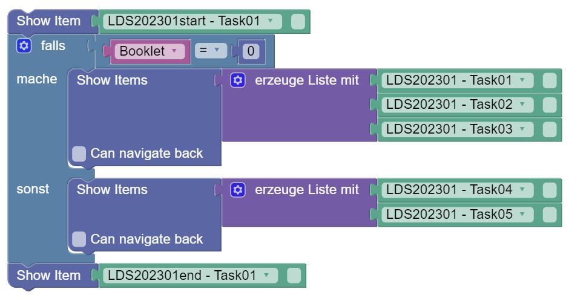
Beide Varianten sind bzgl. der Funktionalität völlig äquivalent, die zweite Vorgehensweise mit Listen erlaubt aber die Verwendung der Option Zurücknavigation innerhalb der booklet-spezifischen Tasks.
- Beispiel für Ablauf mit Zeitbegrenzung
Um mit Hilfe der Blockly-Configuration Zeitbegrenzte Abschnitte innerhalb eines Erhebugnsteils umzusetzen, kann die folgende Blockly-Komponente verwendet werden:

Jeder Ablauf beginnt mit eine nicht zeitbgrenzten Start-Tasks und endet mit einem ebenfalls nicht zeitbegrenzten End-Tasks. Dazwischen läuft eine Zeitbegrenzung für einen Abschnitt mit der Bezeichnung MyFirstTimer, der eine Zeitbegrenzung für 60 Sekunden hat.
Die Tasks 1, 2 und 3 werden in dem Abschnitt Runtime code mit einer Zeitbegrenzung angezeigt. Tritt ein Timeout auf, d.h. werden die drei Tasks nicht innerhalb der 60 Sekunden bearbeitet, wird (ebenfalls ohne Zeitbegrenzung) der Task 4 angezeigt.
- Beispiel für einfaches Booklet-Design mit Zeitbegrenzung
Bei vielen Items kann die Definition von Booklet Designs, d.h. Taskreihenfolgen mit balancierten Positionen, durch Funktionen bzw. Listen vereinfacht werden.
Wenn keine Zurücknavigation notwendig ist, können Funktionen für die Definition von Clustern verendet werden:

Mit Zurücknavigation können die Funktionen Listen von Tasks zurückgeben:

Weitere Informationen siehe hier.
Hinweise zur Verwendung des Blockly-Editors
Die Defintion von Abläufen erfolgt in dem visuellen Blockly-Editor. Die Ausführung beginnt mit dem Element, welches am weitesten oben ausgerichtet ist. Wenn nötig, kann der Arbeitsbereich mit der Funktion Aufräumen automatisch ausgerichtet werden. Zum Hinzufügen von Blockly-Operatoren können diese per Drag-and-Drop aus der Palette gezogen werden.
Löschen: Zum Löschen von Operatoren können diese auf den Papierkorb gezogen werden. Ausgewählte Blockly-Elemente können auch über die Taste Entf(ernen) gelöscht werden. Alternativ können ausgewählte Blockly-Elemente auch über Kontextmenü gelöscht werden.
Redo-/Undo: Innerhalb des Blockly-Editor können einzelne Aktionen rückgängig gemacht werden. Dafür kann die Tastenkombination
Strg + Zverwendet werden. MitStrg + Ywird eine Aktion wiederholt. Durch einen Klick in einen leeren Bereich des Blockly-Editors ist der Zugriff auf ein Kontextmenü möglich, welches ebenfalls die Optionen für Rückgängig und Wiederholen bereithält:
- Speichern: Anpassungen im Blockly-Editor müssen gespeichert werden. Dafür steht unten rechts das Disketten-Symbol zur Verfügung:
Sollen die Änderung (insgesamt) verworfen werden, kann unten rechts die das Verwerfen-Symbol verwendet werden.
- Zoom: Die Ansicht im Arbeitsbereich kann mit den Icons
+vergrößert und mit-verkleinert werden.
Kontextmenü: Weitere Optionen sind über die rechte Maustaste (Kontextmenü) im Blocky-Editor verfügbar. Um diese Funktionen aufzurufen, muss auf ein Blockly-Element ein Sekundärklick (rechte Maustaste) durchgeführt werden:
- Kopieren dupliziert das ausgewählte Blockly-Element, inklusive aller verbunder Elemente.
- Kommentieren von Blöcken ist möglich.
- Blöcke können deaktiviert/aktiviert werden.
- Manche Block-Typen erlauben die Darstellungsform extern/intern zu wechseln.
- Blöcke, welche weitere Blöcke enthalten, können zusammengefalten/entfaltet werden.
- Das Löschen von Blöcken ist auch über das Kontextemü möglich.

Einige Blockly-Elemente stellen im Kontextmenü auch einen Eintrag Hilfe zur Vefügung, welcher auf die allgemein zugängliche Blockly-Dokumenten (https://github.com/google/blockly/wiki/) verweist.
Verwendung von Blockly zur Ablaufsteuerung
Die Grundfunktionen für die Nutzung der Blockly-Umgebung zur Steuerung von Assessments finden sich im Abschnitt Session.
Einzelne Items anzeigen
Auf CBA ItemBuilder-Tasks, die in der Ansicht Items für einen Erhebugnsteil importiert wurden, kann in der Ablaufsteuerung wie in den Beispielen obgen gezeigt mit Hilfe des folgende Blockly-Elements für Tasks zugegriffen werden:

Das Element, welches im Abschnitt Session der Palette des Blockly-Editors zu finden ist, kann durch die Auswahlliste konfiguriert werden. Jedes Blockly-Elements für Tasks kann auf genau einen konkreten Task verweisen, d.h. in der Regel besteht eine Ablaufdefinition aus mehrerer solcher Elemente.
Blockly-Elemente für Tasks können nicht direkt in den Ablauf eingefügt werden, sonder werden zusammen mit einem Show Item-Element verwendet:
Das Beispiel für einfache Testhefte illustriert, dass Abläufe in der Blockly-Definition häufig durch eine Abfolge von mehreren Show Item-Operatoren definiert werden. Show Item-Operatoren können dabei in Bedingungen und Schleifen, sowohl innerhalb des Hauptablaufs als auch innerhalb von Funktionen eingefügt werden.
Verwendung von Geltungsbereichen (Scopes)
Mit Hilfe der Blocky-basierten Ablaufsteuerung ist es auch möglich, CBA ItemBuilder-Tasks mehrfach innerhalb eines Ablaufs zu administrieren:
Dabe wird beim erneuten Aufruf eines Items der Zustand aus dem letzten Besuch wiederhergestellt, d.h. die Bearbeitung wird fortgesetzt. Sollen Items mehrfach neu, d.h. unbearbeitet vorgelegt werden, kann das automatische wiederherstellen nicht gewünscht sein. Dafür kann optional die Checkbox für die Angabe eines Scopes (Geltungsbereich) aktiviert werden:
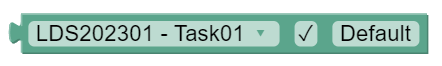
Wird nichts weiter angegeben, wird das Item im “Default”-Scope administriert. Alternativ kann ein Text definiert werde, wie in folgendem Beispiel zu sehen:
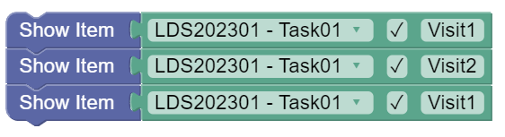
Beim ersten Besuch wird der Task in dem Scope “Visit1” dargestellt. Danach folgt eine neue, unabhängige Darstellung des Tasks in einem anderen Scope (“Visit2”). Im dritten Aufruf wird der Task weder mit den Daten dargestellt, die beim ersten Besuch bereits gesammelt wurde (d.h. der Scope “Visit1” wird erneut verwendet).
Anzeigen mehrerer Items (Itemlisten)
Wie im Beispiel für linearen Ablauf zu sehen, können lineare Tests auch über Listen von Tasks dargestellt werden.
Listen können mit dem Blockly-Operator Show Items verwendet werden:

Zurücknavigation: Das Show Items-Element für Listen kann über die Eigenschaft Can navigate back konfiguriert werden. Ist diese Eigenschaft ausgewählt, dann können CBA ItemBuilder-Tasks mit dem Command
BACK_TASKeine Navigation zum vorherigen CBA ItemBuilder Tasks anfordern.Abbrechen von Listen: Die Verwendung von Listen erlaubt auch das Abbrechen von Listen. Listen können über zwei Wege abgebrochen werden:
- Das Command
CANCEL_TASK, welches innerhalb von CBA ItemBuilder Tasks verwendet werden kann, wird aufgerufen. - Im Testleitermenü, welches für die Studie konfiguriert und ggf. über den Blockly-Operator Testleitermenü bearbeiten angepasst wurde, wird die Funktion Itemliste abbrechen aufgerufen.
- Das Command
Die Adminsitration einer Itemliste wird dadurch abgebrochen, und die Abarbeitung des Blockly-Ablaufs nach dem Show Items-Block fortgesetzt.
Anzeige von Items mit Speicherung der Ergebnisse
Die Operatoren Show Item (für einzelne Items) und Show Items (für Itemlisten) sind auch als Operatoren für Wertzuweisungen verfügbar:

Mit deren Hilfe lassen sich Ergebnisse der Itembearbeitung zu Variablen (String oder Array) zuweisen, und dann für die Ablaufsteuerng auswerten.
- Einzelner Task:
- Liste von Tasks:

Definition von Zeitbegrenzungen
Wie im Beispiel Ablauf mit Zeitbegrenzung bereits illustriert, kann mit dem Blockly-Block Start time with name die Zeitbegrenzte Administration von Items umgesetzt werden.
Das Blockly-Element Start timer with name erlaubt die Definition von Zeitbegrenzungen. Jede Zeitbegrenzung kann einen eigenen Namen haben. Zusätzlich muss die Zeit in Sekunden angegeben werden. Darüber kann definiert werden, welche Art von Zeit verwendet werden soll:

- Realtime:
- Servertime:
- Sessiontime:
- Clienttime:
Schließlich können zwei Stellen mit weiteren Blockly-Operatoren (wie bspw. ein oder mehrere Show Item-Blöcke zum Anzeigen einzelner Items oder ein oder mehrere Show Items-Blöcke zum Anzeigen von Listen) gefüllt werden:
- Runtime code: Diese Blöcke werden ausgefüllt, bis die definierte Zeit abgelaufen ist.
- Elapsed code: Diese Blöcke werden nur ausgefüllt, wenn der Runtime code nicht innerhalb der Zeit beendet wurde.
Blockly-Operatoren für das Testleitermenü
In der Studiendefinition können Funktionen des Testleitermenüs für eine oder mehrere Rollen angelegt werden. Rollen stellen unterschiedliche Funktionen zusammen, die mit Hilfe des vom Testleiter einzugebenden Passworts unterschieden werden können.
Anpassen von Standardfunktionen: Folgende Standardfunktionen können für eine Studie im Abschnitt Info / Testleitermenü definiert werden:
- Navigation: Aufgabe vor / Aufgabe zurück
- Listen: Itemliste abbrechen
- Beenden: Erhebungsteil beenden und Session beenden
- Lautstärkeregelung: Einstellen der Audiolautstärke während des Assessments
Während der Bearbeitung eines Erhebungsteils kann in der Ablaufsteuerung mit Hilfe des folgenden Blockly-Operators das Testleitermenü kontextspezifisch angepasst werden:

Das Testleitermenüs kann für jede der Standardfunktionen (im Bereich Funktion) für eine Rolle (im Bereich Gruppe) sowohl die Beschriftung der Schaltfläche (im Bereich Label) geändert werden:
- Hinzufügen: Funktion wird im Testleitermenü ergänzt
- Entfernen: Funktion wird aus dem Testleitermenü entfernt
- Deaktivieren: Funktion wird im Testleitermenü deaktiviert
- Aktivieren: Funktion wird im Testleitermenü aktiviert
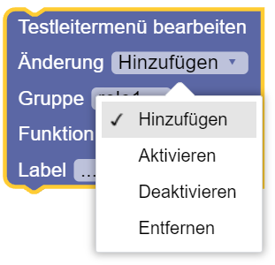
Der Aufruf dieses Blockly-Operators im Testablauf definiert das Verhalten des Testleitermenüs im weiteren Testablauf. Im Unterschied zu Entfernen bleiben deaktivierte Funktionen im Testleitermenü sichtbar, können aber (bis sie wieder aktiviert werden) nich ausgeführt werden.
Verwenden von Blockly-Funktionen im Testleitermenü: Der Blockly-Operator für das Bearbeiten des Testleitermenüs enthält im Abschnitt Funktion auch die Option zum Ausführen von Blockly-Code (ExecuteBockly):

Wenn als ExecuteBlockly ausgewählt ist, dann kann in dem Blockly-Element Testleitermenü bearbeiten eine innerhalb des Blockly-Editors definierte Funktionen ausgewählt werden. Die in dieser Funktion definierten Blockly-Operatoren werden dann ausgeführt, wenn ein Testleiter die entsprechende Schaltfläche zur Laufzeit im Testleitermenü auswählt.
Fortgeschrittene Blockly-Verwendung
Ablaufsteuerung mit Bedingungen
Der Abschnitt Logic enthält den Blockly-Operator falls/mache, welcher zur Umsetzung von Bedingungen im Ablauf verwendet werden kann. Bedingungen sind logische Ausdrücke, bspw. die Prüfung ob eine Preload-Variable einen bestimmten Wert hat:
Nur wenn die Bedingung (falls) erfüllt ist, werden die Blocky-Operatoren ausgeführt, welche innerhalb des Bedingungsblocks definiert sind (d.h. neben mache). In dem Beispiel wird geprüft, ob eine boolsche Variable den Wert wahr hat.
Die Bedingung wird dabei als separater Block definiert, die mit dem Blockly-Operator falls/mache verbunden ist. Hier die beiden Komponenten separat:
- Bedingung:

- Logischer Ausdruck:

Verwendung logischer Ausdrücke
Logische Ausdtrücke in Bedingungen basieren entweder auf Wertevergleichen oder Rückgaben von Funktionen. Wertevergleiche können mit folgendem Blockly-Element realisiert werden:
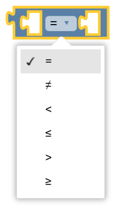
Die beiden Slots können mit Werten gefüllt werden. Für boolsche Werte (wahr/falsch) steht ein entsprechendes Blockly-Element im Abschnitt Logic bereit:

Bedingungen sind auch mit Variablen von anderem Datentyp möglich:

Für numerische Werte gibt es ein entsprechendes Blockly-Element im Abschnitt Math, welcher Operatoren für Zahlen und einfache mathematische Operationen enthält:

Mit dessen Hilfe und einer numerischen Variable lässt sich folgende Bedingung formulieren:
Aus technischen Gründen kann es auch notwendig sein zu prüfen, ob eine Variable noch gar keinen Wert hat. Das kann durch Verwendung der Blockly-Komponente null umgesetzt werden:
Kombination von logischen Ausdrücken: Einzelne Bedingungen oder logische Ausdrücke können mit folgendem Blockly-Element aus dem Abschnitt Logik verbunden werden:

Dabei steht eine und sowie eine oder-Verknüpfung der Aussagen zur Auswahl. Die freien Eingänge

Mehrere logische Ausdrücke können in einander geschachtelt werden:

Hinweis: Für eine übersichtlichere Darstellung ist bei der äußeren und-Verknüpfung die externe Darstellung gewählt.
Mehrere Bedingungen (sonst falls / sonst): Durch Klick auf das kleine Zahnrad-Symbol eines Bedingungsblocks (falls/mache) kann dieser konfiguriert werden:

Durch das Hinzufügen eines Abschnitts sonst falls können kann eine weitere Bedingung hinzugefügt werden. Die in einem sonst falls Abschnitt definierte Bedingung wird geprüft, wenn die vorherigen Bedingunge (falls) nicht erfüllt sind. Ist eine Bedingung erfüllt, werden die definierten Blockly-Operatoren ausgeführt.
Durch das Hinzufügen eines Abschnitts sonst können Blöcke hinzugefügt werden, welche dann ausgeführt werden wenn keine der Bedingungen erfüllt ist.
Spezialfall: prüfe-Operator für drei Bedingungen: Für drei Bedingungen stellt der Blockly-Editor eine speziellen Operator prüfe-falls wahr-falls falsch zur Verfügung:

Der Operator kombiniert zwei logische Ausdrücke, z.B.:

Das Konstrukt ist eine Kurzform für folgende Prüfung, wie sie in folgender Tabelle dargestellt ist:
| MyNumberVariable | MyStringVariable | MyBooleanVariable | Ergebnis |
|---|---|---|---|
| \(= 42\) | \(=\) Example | (any) | true |
| \(= 42\) | \(\neq\) Example | (any) | false |
| \(\neq 42\) | (any) | true | true |
| \(\neq 42\) | (any) | false | false |
Ohne den Operator für drei Bedingungen könnte die gleiche Prüfung mit folgender Kombination umgesetzt werden:

Negation: Um einen logischen Ausdruck umzukehren (Negation) steht folgender Blockly-Operator zur Verfügung:
Ablaufsteuerung mit Schleifen
Die mehrfache Ausführung von Blockly-Operatoren (und der damit darstellbaren Aktionen) ist mit Schleifen möglich. Der Abschnitt Loops der Palette enthält die dafür notwendigen Blockly-Elemente.
Wiederhole n-mal: Der folgende Blockly-Operator kann verwendet werden, um die Ausführung von Blöcke n-mal zu wiederholen:

Wiederhole solange: Schleifen können auch solange wiederholt werden bis eine Bedingung zutrifft (oder solange eine Bedingung zutrift):
Beispiel:

Zähle von/bis: Schleife mit Hilfsvariablen:
Für jeden Wert aus Liste: Schleife über alle Werte einer Liste:

Schleifen vorzeitig abbrechen: Folgendes Blockly-Element kann genutzt werden, um eine Schleife (vorzeitig) abzubrechen oder um vorzeitig mit dem nächsten Schleifendurchlauf zu beginnen:
Operatoren für Zahlen und einfache mathematische Funktionen
Der Abschnitt Math der Palette enthält Blockly-Elemente zur Verwendung von Zahlen und einfachen mathematischen Funktionen.
Ausdrücke
- Zahlen: Ganzzahlen / Dezimalzahlen

- Symbole: Spezielle Symbole oder Konstanten:

Basale Funktionen
- Addition, Subtraktion, Multiplikation, Division und Potenzfunktion von zwei Argumenten:
Schachtelung ist möglich, z.B.:
- Division mit Rest:
- Ob eien Zahl gerade ist, kann mit diesem Blockly-Element geprüft werden:
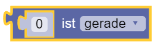
- Mit dem folgenden Blockly-Element, kann eine Zahl auf einen Bereich begrenzt werden:
Eingebaute Funktionen
- Trigonometrische Funktionen:
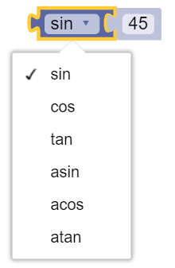
- Runden von Werten:
- Weitere Funktionen:
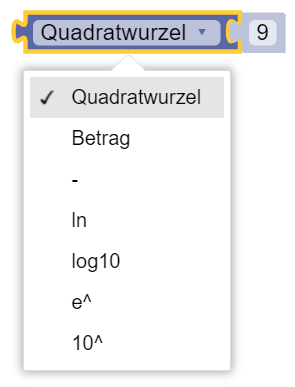
Erzeugung von Zufallszahlen: Für die Erstellung von Zufallszahlen stehen zwei Blocky-Elemente zur Verfügung:
- Ganzzahlen (in Wertebereich):

- Zufallszahl zwischen \(0\) und \(1\):
Numerische Funktionen für Listen: Vordefinierte Funktionen für Listen umfassen:

Hinweise:
Weitere Funktionen lassen sich, wenn benötigt, mit Schleifen für Listen umsetzen.
Bei der Verwendung der Funktionen ist darauf zu achten, dass die ausgewählte Funktion für die Datentypen der List anwendbar ist.
Operatoren für Text und einfache String-Operationen
Der Abschnitt Text der Palette enthält Blockly-Elemente zur Verwendung Zeichenketten.
Ausdrücke: Zum erstellen von Text steht folgender Operator zur Verfügung:

Verketten: Verschiedene Operatoren können verwendet werden, um Text zusammenzufügen und zu Variablen zuzuweisen:
- Einen Text an eine Variable anfügen:
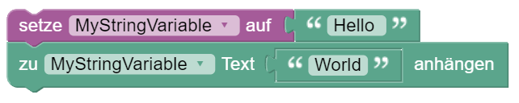
- Texte (und Variablenwerte) verketten und an andere Blockly-Operatoren weitergeben:

- Zusammengefügten Texte eine Variable zuweisen:
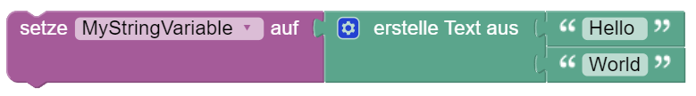
Textlänge: Die Länge einer Zeichenkette kann mit folgendem Blockly-Operator ermittelt werden:

Prüfung auf leeren String: Leere String-Variablen können daran erkannt werden, dass die Anzahl der Zeichen \(0\) ist.
Alternativ kann dafür auch der folgende Blockly-Operator verwendet werden:

Position in String finden: Ein Operator, der im Text (der per Variable oder als Ausdruck übergeben wird) das erste oder letzte Auftreten eines Begriffs sucht, kann wie folgt verwendet werden:
Zurückgegben wird dabei die Position des Begriffs innerhalb der Zeichenkette (d.h. im Text).
Teilzeichenketten bilden: Der folgende Operator nimmt aus der übergebenen Zeichenkette im Text die ersten Buchstaben. Die Anzahl der Buchstaben wird dabei ebenfalls übergeben.
- Beispiel (hier wird, wenn die Option nimm ersten ausgewählt ist der Variable
MyStringVariableder TextABC, d.h. die ersten drei Buchstaben der ZeichenketteABCDEFG) zugewiesen:
Buchstaben aus einer Zeichenkette kann man auch mit folgendem Operator entnehmen, und bspw. einer Variablen zuweisen:
- Beispiel (hier können bspw. die Zeichen 3 bis 5 aus einer Zeichenkette entnommen werden):

Texte Verändern: Vorhandene Texte (entweder als Ausdrücke oder aus Variablen vom Datentyp String) können durch die Anwendung von Operatoren verändert werden.
- Folgender Operator kann verwendet werden, um Text in Grossbuchstaben oder in Kleinbuchstaben umzuwandeln:

- Führende, abschließende oder führende und abschließende Leerzeichen können durch folgenden Operator entfernt werden:

Operatoren für Zeiten und einfache Zeit-Operationen
Der Abschnitt Date & Time der Palette enthält Blockly-Elemente zur Verwendung Zeiten innerhalb von Ablaufdefinitionen.
Festhalten von Zeitpunkten: Variablen vom Datentyp DateTime können Zeitstempel zugewiesen werden.
Ermitteln von Zeitdifferenzen: Vollständiges Beispiel: Folgender Blockly-Code misst die Zeit für die Bearbeitung von Task 1 bis 4. Dafür wird zunächst der Startzeitpunkt fegesthalten, und nach der Bearbeitung der Aufgaben wird die Zeitdifferenz ermittelt und in Sekunden umgewandelt:

Umrechen von Zeitmaßen

Operatoren für Listen
Der Abschnitt Lists der Palette enthält Blockly-Elemente zur Erstellung und Verwendung von Listen.
Liste erstellen: Es stehen verschiedene Optionen zur Verügung, wie Listen erstellt werden können.
- Listen können aus besehenden Elementen erstellt werden:

Die Anzahl der Elemente des Operators erzeuge Liste mit kann per Drag-and-Drop konfiguriert werden, nachdem Zahnrad-Symbol angeklickt wurde:

- Liste können durch Wiederholung eines Elements erstellt werden:

Verbinden von Listen: Bestehende Listen können zusammengeführt werden mit folgenden Operator:
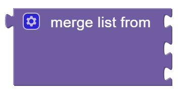
Teillisten: Aus Listen kann mit folgendem Operator eine Teilliste ausgewählt werden:
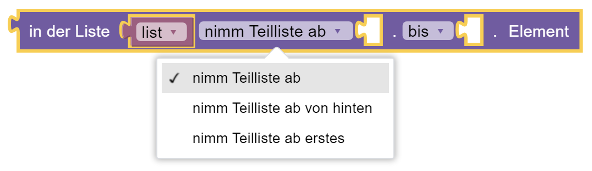
Weitere Optionen des Operators für bis: bis von hinten und bis letztes.
Eigenschaften von Listen: Folgende Operatoren stehen zur Verfügung um Eigenschaften einer Liste abzufragen:
- Folgender Operator gibt wahr zurück, wenn die verbundene Liste leer ist:
- Folgender Operator gibt die Länge der Liste zurück:

- Folgender Operator gibt die distinkte Elemente einer Liste zurück

Suchen und Ersetzen: Folgende Operatoren stehen zum Suchen und Ersetzen von Elementen in Listen zur Verfügung:
- Folgender Operator findent Elemente in Listen:
- Folgender Operator gibt / entfernt oder ersetzt in einer Liste und gibt das ELement zurück:
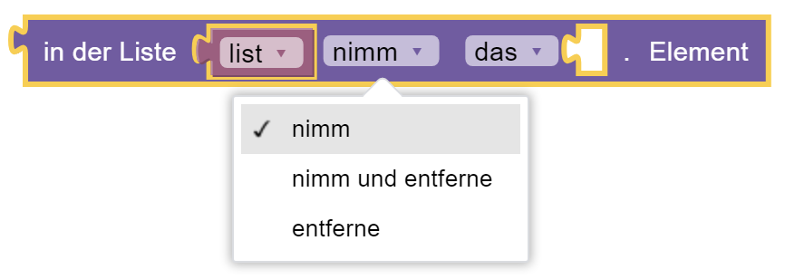
Weitere Optionen des Operators für das: von hinten das / Erste / Letzte und Zufällig.
- Folgender Operator ersetzt under fügt in einer Liste ein:

Weitere Optionen des Operators für das: von hinten das / Erste / Letzte und Zufällig.
Umwandlung von Listen und Text: Liste und Text können über Trennzeichen umgewandelt werden.
- Folgender Operator erstellt einen Text aus einer Liste oder eine Liste aus einem Text:

Listen Sortieren: Elemente in Listen können auch sortiert werden.
- Folgender Operator gibt die distinkte Elemente einer Liste zurück:

Blockly-Variablen
Der Abschnitt Variables der Palette enthält Blockly-Elemente zur Erstellung und Verwendung von Variablen.
Variable Erstellen: Um eine Blockly-Variable zu erstellen enthält die Palette die Typisierte Variable Erstellen:

- Blockly-Variablen haben immer einen Variablennamen und Datentyp:

Einfache Datentypen und Wertzuweisungen: Folgende basale Datentypen werden unterstützt:
- Boolean: Logische Wahrheitswerte und Logische Ausdrücke (
wahroderfalsch)
- Number: Datentyp für Zahlenwerte (mit und ohne Dezimalstelle)
- String: Textwerte bzw. Zeichenketten

Für Zeiten werden folgende Datentypen bereitgestellt:
- DateTime: Datum und Uhrzeit
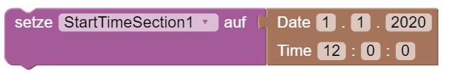
- TimeSpan: Zeitspanne
Datentypen für mehrere Werte: Neben den basalen Datentypen werden auch Datentypen für mehrere Werte unterstützt:
- Array: Datentyp für Listen

Dictionary: (Dokumentation fehlt)
KeyTypedValuePairs: (Dokumentation fehlt)
Variablenwerte Verwenden: Für die Verwendung von Variablenwerten, können Blockly-Elemente mit Eingängen folgende Komponente aufnehmen:

- Welche Variable verwendet wird, kann dabei ausgewählt werden. Für defnierte Variablen findet sich dafür jeweils auch ein Blockly-Element im Abschnitt Variables der Palette:
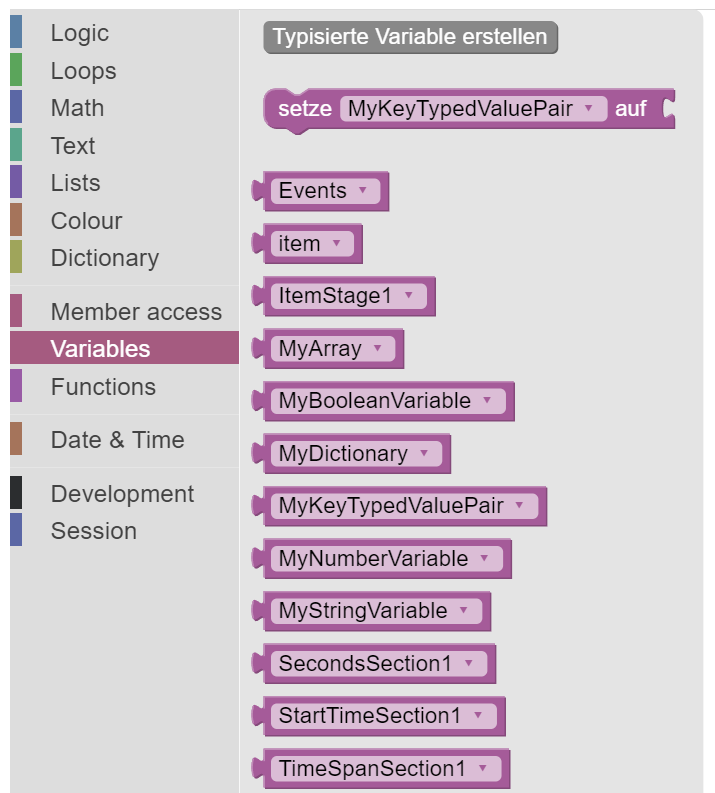
- In der Palette findet sich auch ein Blockly-Element vom Typ setze … auf. In diesem kann ebenfalls ausgewählt werden, den Wert welcher Variable es setzt:
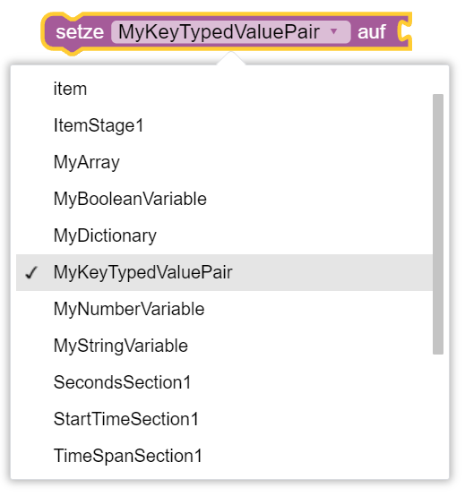
Blockly-Funktionen
Der Abschnitt Functions der Palette enthält Blockly-Elemente zur Verwendung von Funktionen innerhalb von Ablaufdefinitionen. Funktionen kombinieren Blocky-Code, so dass dieser nur einmal definiert aber mehrfach verwendet werden kann.
Definieren von Funktionen: Es können zwei verschiede Formen von Funktionen definiert werden.
- Funktionen ohne Rückgabewert:
Funktionen ohne Rückgabewert können, damit sie augerufen werden, im Ablauf einfach mit vorherigen und nachfolgenden Blockly-Elementen verbunden werden (d.h. sie haben eine Verbindung nach oben und unten):
- Funktionen mit Rückgabewert:
Funktionen mit Rückgabewert können in einem Zuweisungs-Block aufgerufen werden (d.h. sie haben eine Verbindung nach links):
Zu welchem Typ eine Zuweisung sinnvoll ist, hängt von dem Typ des Rückgabewerts ab.
Definieren von Rückgabewerten von Funktionen: Funktionen werden durch speziellen Blockly-Elemente definiert, die an einer beliebigen Stelle im Code-Editor eingefügt werden können.
- Rückgabewerte können für Funktionen mit Rückgabewert definiert werden. Der Rückgabewert kann direkt an die Funktionsdefinition neben gib zurück angefügt werden:

Ergänzend stehen die folgenden zwei Blockly-Elemente zur Verfügung, die nur innerhalb einer Funktiondefintion (mit Rückgabewert) verwendet werden können:
- Der Operator gib zurück erlaubt die Rückgabe eines Wertes. Danach können innerhalb der Funktion keine weiteren Blockly-Element in den Ablauf platziert werden (d.h. der gib zurück-Operator hat keine Verbindung nach unten):
- Der Operator falls gib zurück Operator gibt eine Wert nur dann zurück, wenn eine Bedingungen erfüllt ist. Ist die Bedingung erfüllt, endet die Abarbeitung des Ablaufs in der Funktion, ist die Bedingung nicht erfüllt, wird die Bearbeitung fortgesetzt (d.h. der falls gib zurück-Operator hat eine Verbindung nach unten):

- Der falls gib zurück Operator ist also identisch mit folgender Kombination von Operatoren:
- Beide Operatoren (falls gibt zurück und gib zurück) können nicht außerhalb von Funktionen verwendet werden:
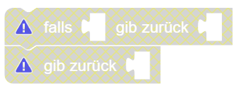
- Die beide Operatoren (falls gibt zurück und gib zurück) können innerhalb von Funktionen ohne Rückgabewert verwendet werden, um die Abarbeitung von Funktionen zu beenden (aber nicht zum Rückgeben von Werten):
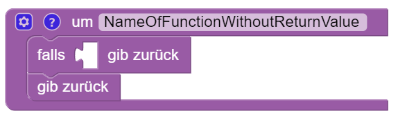
Beispiel:
- Die folgende Funktion gibt den Wert der Variablen
MyStringVariable(Any value 1) in 50% der Fälle zurück (d.h. wenn eine erste gezogene Zufallsvariable größer \(0.5\) ist). In den anderen 50% der Fälle, wird eine weitere Zufallsvariable gezogen, und wenn diese größer \(0.5\) ist, dann wird der Text Any value 2 zurückgegeben. Ist auch dies nicht der Fall, dann wird der Text Default zurückgebeben:

Rückgabewerte sind typisiert. Die Ablaufsteuerung unterstützt auch Funktionen, die …
- … einzelne Tasks zurückgeben:

- … Listen von Tasks zurückgeben:

Definieren von Aufrufparametern von Funktionen: Funktionen können auch Parameter verwenden, die beim Aufruf der Funktion zu übergeben sind (Aufrufparametern). Die Defintion von Aufrufparametern ist nach einem Klick auf das kleine Zahnrad-Symbol eines Funktions-Blocks möglich:
Passend zur Definition der Parameter, erfolgt dann der Aufruf der Funktion durch Übergabe:
- Definition eines Parameters
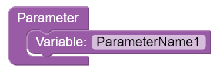
- Aufruf der Funktion mit Angabe von Wert:

Beispiel:
- Das folgende Beispiel zeigt eine Funktion mit zwei Parameter, deren Verwendung innerhalb der Funktion am Beispiel von Bedingungen und den Aufruf der Funktion mit festen Werten:

- Alternativ kann die Funktion natürlich auch mit Variablen aufgerufen werden:

Nutzung von Itemergebnissen in der Ablaufsteuerung
(Dokumentation)
Blockly-Operatoren zum Kodieren fehlender Werte
(Dokumentation folgt)
Blockly-Operatoren zum schreiben von Daten
(Dokumentation folgt)
Log-Daten: Folgender Operator kann genutzt werden, um Informationen direkt in die Log-Daten zu speichern:

Ergebnis-Daten: (Dokumentation folgt)
Monitoring-Daten: (Dokumentation folgt)
Kommentieren von Blockly-Code
Der IRTLib Editor unterstützt zwei verschiedene Optionen zur Kommentierung von Blockly-Code.
Kommentare als Blockly-Elemente
Kommentare, die im Ablauf dauerhaft sichtbar sein sollen, können über die Plaette im Abschnitt Development hinzugefügt werden:

Diese Kommentare können wie Blocky-Operatoren verschoben werden und zeigen einzeiligen Kommentartext.

Ausführliche Kommentare an Blockly-Elementen
Für ausführlichere Kommentare kann über das Kontextmenü jeder Block mit einem Kommentar hinzugefügt (und wenn vorhanden gelöscht) werden:

Diese Kommentare können mehrere Zeilen umfassen und werden dargestellt, wenn auf das kleine ?-icon eines Blocks geklickt wurde.

Darstellung von Blockly-Code
Entfalten / Zusammenfalten
Große und komplexe Abläufe können im Blockly-Editor unter Umständen unübersichtlich werden. Um für eine Betrachtung nicht benötigte Blockly-Elemente auszublenden, ohne die Funktion des Ablaufdefinition zu veränern, können Blöcke zusammengefaltet werden:
Das wird in folgendem Beispiel illustriert:
- Entfaltete (d.h. vollständige) Darstellung des markierten Blocks:
- Option zum zusammenfalten des Blocks im Kontextmenü:
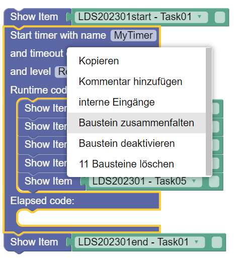
- Zusammengefaltete Darstellung des Blocks innerhalb der Ablaufdefinition:
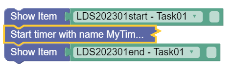
- Option zum entfalten des Blocks im Kontextmenü:

Das zusammenfalten / entfalten von Blockly-Elementen ändert nichts an der Funktion einer Ablaufdefinition und dient nur der übersichtlicheren Anordnung von komplexen Ablaufdefinitionen.
Deaktivieren / Aktivieren
Der Blockly-Editer bietet die Option, Blockly-Element statt sie zu Löschen nur zu deaktivieren. Deaktivierte Blockly-Elemente bleiben in der Ablaufdefinition enthalten, werden aber nicht ausgeführt.
In folgendem Beispiel ist der Block zum Anzeigen des Tasks 3 deaktiviert, d.h. es werden nur Task 1, 2 und 4 angezeigt:
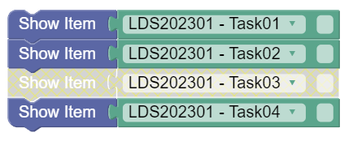
Aktivieren bzw. Deaktivieren von Blockly-Elementen erfolgt über das Kontextmenü:

Internal / External: Einige Blockly-Elemente mit Eingängen (d.h. Stellen, an denen man weitere Blöcke verbinde kann) erlauben zwischen zwei Darstellungsformen zu wechseln.
- Internal: Die Eingänge sind innerhalb der Blöcke angeordnet.
- Exnternal: Die Eingänge sind an der Seite der Blöcke angeordnet.
Beide Darstellungsformen sind bzgl. der Funktionalität äquivalent.
Aufräumen: Im Kontextmenü des Blockly-Editors, welches durch Klick in einen leeren Bereich geöffnet werden kann, ist die Funktion Bausteine aufräumen enthalten:

Durch Aufruf von Bausteine aufäumen werden alle Blockly-Elemente im Blockly-Editor vertikal untereinander ausgerichtet.
Routing zwischen Erhebungsteilen
Wenn mehrere Erhebungsteile für eine Studie definiert sind kann die Abfolge von Erhebungsteilen definiert werden, in welcher Befragte oder Testpersonen die Inhalte der Erhebungsteile präsentiert bekommen.
Neben einfachen linearen Abläufen können Abläufe von mehreren Erhebungsteilen auch mit eine Blockly-basierten Routing konfiguriert werden.
Eine detaillierte Beschreibung zum Routing zwischen Erhebungsteilen findet sich hier in der eingebetteten Hilfe:
Zusammenfassung zu Routing zwischen Erhebungsteilen
Die Reihenfolge von Erhebungsteilen kann mit Hilfe von Blockly definiert werden (analog zur Definition der Reihenfolge von Items innerhalb von Erhebungsteilen). Diese Option ist verfügbar, wenn in der Grundkonfiguration zu einer Studie (in der Ansicht Übersicht) die Option Routing für Erhebungsteile aktivieren gewählt ist.
Für die allgemeinen Grundlagen zur Verwendung von Blockly im IRTlib Editor siehe die Hilfe zum Routing innerhalb von Erhebungsteilen.
Funktionen die nur im Routing zwischen Erhebungsteilen zur Verfügung stehen sind:
- Erhebungsteil Anzeigen
Dieser Blockly-Operator ersetzt das Show Item innerhalb von Erhebungsteilen.
- Erfolgreiches Login

Dieser Blockly-Operator hat den Wert wahr, wenn vor der Anzahl der maximalen Versuche (hier: unendlich, d.h. unbegrenzt hoft) gültige Login-Informationen angegeben wurden.
Hinweis: Änderungen an der Sicht Routing zwischen Erhebungsteilen müssen über das Disketten-Symbol gespeichert oder mit dem Rückgängig-Symbol verwerfen werden: